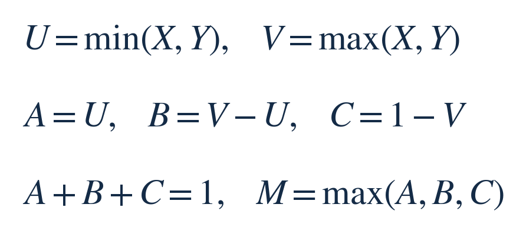
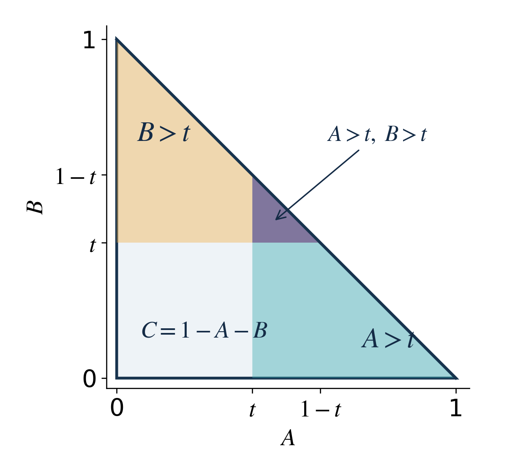
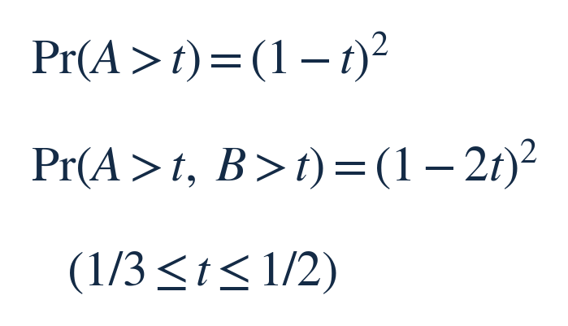
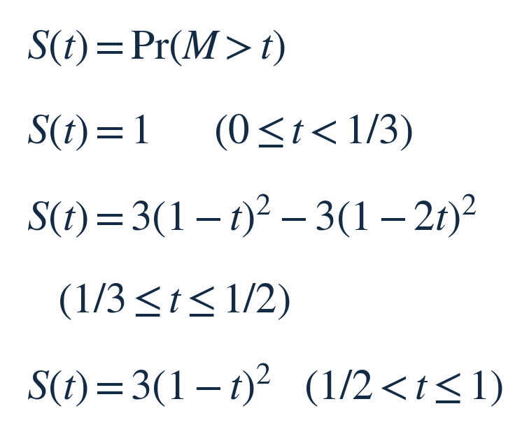
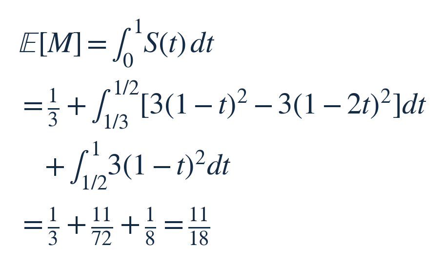
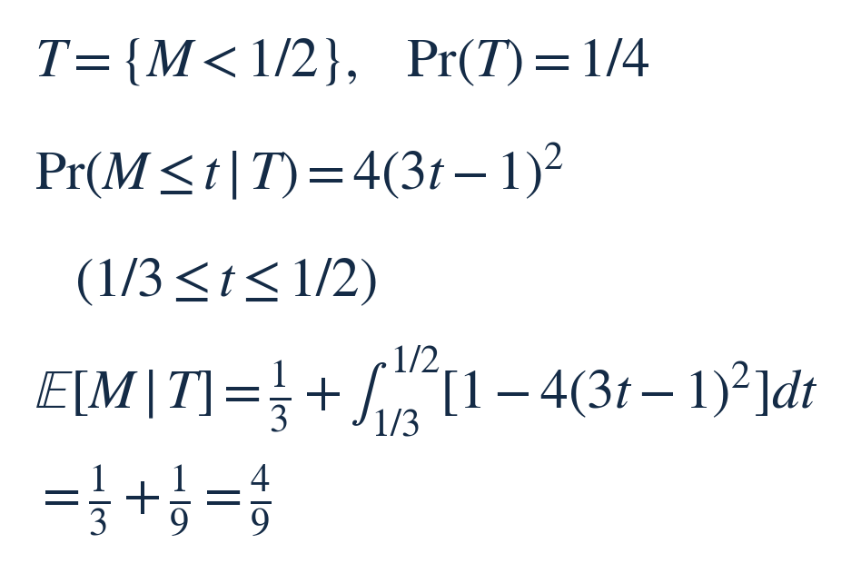

每周探索 · 每周面试挑战 · 2026-10-17
类别：微积分 × 几何概率。建议独立思考 25–35 分钟，解答阅读约 8–10 分钟。经典随机断棒背景的原创改编题，不对应已核实的公司面试。
主问题
一根长度为 1 的线段，坐标从 0 到 1。在整根线段上独立、均匀地选两个切点 X 和 Y，然后同时切开，得到三段。两个切点重合或落在端点的概率为零。这里每个切点都从原来的整根线段上选取，不采用“先选一段再切”的程序。
把每次所得三段中最长的一段的长度记为 M。求 M 的期望，即重复这一实验时最长段长度的概率加权平均。请给出精确值，并说明为什么；只给数值模拟不算解答。
增量追问
仍按完全相同的方式切割，只保留三段能够组成非退化三角形的实验结果，其余全部丢弃。在保留下来的结果中，最长段长度的期望是多少？非退化表示三角形面积严格大于零。
题面到此。下面先给三级提示，再给完整解答；静态页面只能分隔，无法真正锁住答案。
提示区：需要时逐级看
提示 1｜先给三个段长命名，写出它们必须满足的关系。把“最长段超过某个阈值”改写成关于三个段长的事件。
提示 2｜两切点的联合分布是单位正方形内的均匀分布。将切点排序后，可以换成前两段长度作为坐标。注意：两段同时超过阈值的情况，有时存在，有时不存在。
提示 3｜对非负长度，把“超过阈值 t 的概率”从 t=0 起积分，可以得到平均长度。追问还要改变样本范围，并用保留概率重新归一化。
完整解答，想好再看
本期新增的是：用随机长度所占的平面区域计算分布，再由分布计算平均值。它不同于上期对固定向量配置求最优值；追问中的条件筛选也不同于数学小课中按平方误差选择预测规则。无需先读往期。
1. 把一次切割放进长度平面
先把两个切点从左到右排列为 U、V。A、B、C 分别表示左、中、右三段的长度，M 是其中的最大值：


为什么换坐标后还能用面积算概率？原来的 (X,Y) 在单位正方形内均匀。除对角线外，每一组有序切点 (u,v) 都对应原来的两点 (u,v) 和 (v,u)，因此排序后的密度为 2，所在三角形面积为 1/2。
再令 a=u、b=v−u；反过来 u=a、v=a+b。这是面积不变的剪切变换：它把两个坐标方向变成 (1,1) 与 (0,1)，围出的平行四边形面积仍为 1。因此 (A,B) 在 a≥0、b≥0、a+b≤1 的三角形内均匀，密度仍为 2。第三段由 C=1−A−B 唯一确定。
下图用 t=0.4 画出两个超阈值事件。整个大三角形都是可能的段长组合；青色是 A>t，黄色是 B>t，紫色是两者同时成立的区域。图只画这两个事件，第三个 C>t 会在后面一并计入。


2. 用区域面积求最长段超过阈值的概率
先看 A>t。把横坐标的起点从 0 移到 t，余下的是直角边均为 1−t 的三角形，面积为 (1−t)²/2；乘密度 2，概率就是 (1−t)²。B>t 相同。C>t 等价于 A+B<1−t，也给出同样大小的三角形。
若 A、B 都超过 t，先从这两段各扣掉 t。剩余长度总共为 1−2t，紫色三角形的两条直角边也都是 1−2t，所以交集概率为 (1−2t)²。另两对段长的交集面积相同；例如 A>t、C>t 时，平移 A 后同样剩下边长 1−2t 的三角形。


现在看阈值怎样改变事件。三段和为 1，所以 M 至少为 1/3：低于这个阈值时必然超过。t 在 1/3 与 1/2 之间，两段可以同时超过 t，但三段不可能同时严格超过 t。把三种单段事件相加时，交集各多算一次，要减去三种两两交集。t 大于 1/2 后，连两段同时超过都不可能，三个事件互不相交。
用 S(t) 表示“最长段超过 t 的概率”，Pr 表示概率，上面的计数写成：


在 t=1/3 两种写法都给 1；在 t=1/2 都给 3/4；到 t=1 时降至 0。分段的连接和长度边界相符。等号边界只有线或点，面积为零。
3. 从超过阈值的概率回到平均长度
想象一次实验得到长度 m。对每个从 0 到 1 的阈值 t，若 t<m 就画一条高度为 1 的细柱，否则高度为 0；整片柱子的面积恰好是 m。把很多次实验的细柱先按同一阈值平均，柱高便成为 S(t)。所以平均长度等于这条概率曲线下面的面积。这里所有量都非负且有界，交换平均与积分成立。
记号 E 表示期望。按上面的三个阈值区间积分：


中间一段可用原函数 −(1−t)³+(1−2t)³/2，在 1/3 与 1/2 之间取差，得到 11/72；最后一段用 −(1−t)³ 取差，得到 1/8。因此最长段平均占原线段的 11/18，约 0.6111。每一段的均值虽都是 1/3，但取最大值后再平均，运算已经变了。
4. 追问：筛成三角形之后重新计算
三段能组成非退化三角形，等价于最长段严格小于另外两段之和。因为总长为 1，这个条件就是 M<1/2。记这一保留事件为 T。由上面的尾概率，保留率是 1−3/4=1/4。
设 F(t)=Pr(M≤t)，即最长段不超过 t 的概率。在 1/3 到 1/2 内，F(t)=1−S(t)；将上一节的多项式展开，得到 1−3(1−t)²+3(1−2t)²=(3t−1)²。
在这个区间里，M≤t 的结果已经满足保留条件（端点差异概率为零）。因此只在保留样本中计数时，分子仍是 F(t)，分母要除以保留率 1/4。竖线“|T”表示限定在事件 T 内：


最后一行的积分为何为 1/9？区间长度是 1/6，而 4(3t−1)² 的积分是 4(3t−1)³/9，两端取差为 1/18；相减得到 1/9。加上所有保留样本都超过的 1/3，答案为 4/9，约 0.4444，落在 1/3 与 1/2 之间。
容易错在哪，方法能用到哪
常见错误一：把三个段长当成独立变量，直接相乘概率。它们的和固定为 1，独立性不成立。独立的是原始两个切点。常见错误二：追问把主问题均值直接除以保留率。条件平均必须先限定到保留事件，再归一化；被丢弃结果的长度不能混进分子。
可复用的方法是先固定随机生成规则，再把事件画成区域，必要时扣除重叠，最后积分尾概率。若原线段长为 L>0，所有长度同比缩放，两个平均值也分别乘 L；若改变切点分布或改成先选一段再切，区域权重会改变，不能直接沿用本题数值。
分段连续性、总概率与精确积分均已核对；独立切点的小规模数值抽样也与结果一致。抽样只作检查，上面的区域与积分推导才是证明。
出处与选读
题面、提示、图示与最长段及条件平均的推导为原创表述；经典断棒模型和三角形条件可对照 MIT 课程。没有核实具体公司出处。
MIT 6.041SC（2013）：Probability that Three Pieces Form a Triangle，官方习题课文字稿
V. Rotar：Survival Distributions，第9页，期望与尾概率积分（大学作者主页PDF）
如果已经熟悉这类题，可以只尝试追问，并检查保留样本后的归一化是否正确。